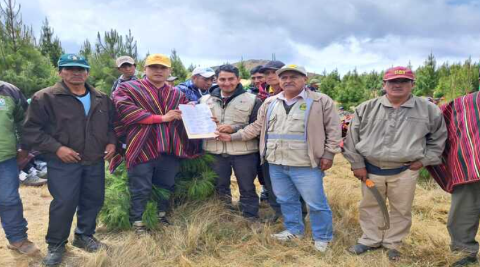

Explora recomendaciones personalizadas para tus cultivos. Haz clic aquí para acceder a guías detalladas sobre las mejores prácticas de siembra, cuidado y cosecha, optimizadas según tu tipo de suelo y clima.
Encuentra los recursos esenciales para maximizar tu productividad. Haz clic aquí para acceder a herramientas, insumos y consejos útiles adaptados a las necesidades de tu cultivo y región.
Descubre tips y recomendaciones para mejorar tu rendimiento agrícola. Haz clic aquí para obtener consejos prácticos sobre el cuidado de tus cultivos y la gestión eficiente de tus recursos.
En la reunión se abordó la solicitud de verificación de la construcción de canales en estos sectores. Junto con la Oficina de Planificación Agraria de la GRA y en colaboración con la Junta de Usuarios de Chancay Lambayeque, se determinaron las necesidades prioritarias. Además, se alcanzaron acuerdos donde la Gerencia de Agricultura brindará el apoyo necesario a los pobladores para avanzar con los proyectos mencionados.
Gobierno del Perú, 20 de agosto 2024
En un esfuerzo conjunto, el Gobierno Regional de Lambayeque a través de la Gerencia Regional de Agricultura y la comunidad de Cañaris, articulan acciones orientadas a la preservación y el desarrollo sostenible ambiental, con la forestación y gestión del recurso hídrico. Se enfatizó que en el aspecto ambiental, la actividad contribuirá a evitar el deterioro de los suelos, proteger el deslizamiento de tierra, mejorar la captura de CO2 y servirá de cortina rompeviento y captura de partículas de polvo.
Gobierno del Perú, 20 de septiembre 2024
Los incendios forestales han generado grave afectación en 22 regiones del país, no solo en zonas de bosques sino también de cultivos. Además ya se registran 16 personas muertas debido a estos siniestros. Así lo indicó el presidente de la Asociación de Gremios Productores Agrarios del Perú (AGAP), Gabriel Amaro Alzamora, quien dijo que estos incendios, que se producen todos los años, se originan principalmente por la realización de malas prácticas como la quema de residuos agrícolas o restos vegetales para originar lluvias.
Agencia Agraria de noticias, 20 de septiembre 2024
Contáctanos.